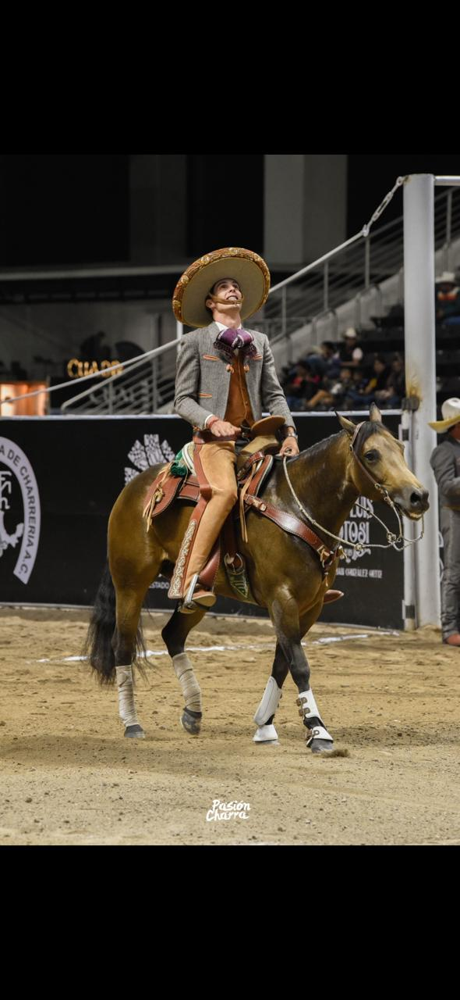
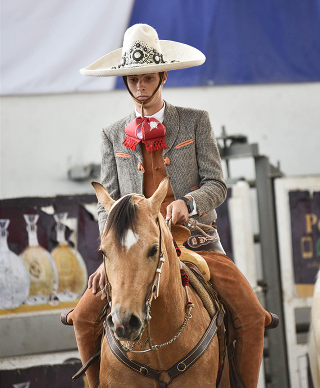

Disponible
Atención, seguridad y comprensión para trabajar aun cuando el contexto cambia.

El atleta primero
Potencia, disposición y sensibilidad no se imponen: se desarrollan con una preparación que entiende al caballo completo.
Visión AC
El rendimiento auténtico conserva la voluntad del caballo.
Un gran caballo no sólo ejecuta. Comprende, confía y responde.
Trabajamos para que fuerza y ligereza convivan. La precisión llega cuando el cuerpo puede y la mente permanece disponible.
El entrenamiento se adapta a la etapa del ejemplar, sin perder de vista su longevidad, su condición y el vínculo con quien lo monta.
Atleta equino
La competencia exige respuestas rápidas. El proceso previo debe construirlas sin sacrificar equilibrio ni confianza.
Atención, seguridad y comprensión para trabajar aun cuando el contexto cambia.
Condición, coordinación y fuerza funcional para sostener la calidad de cada maniobra.
Comunicación precisa que hace visible el trabajo sin volverlo pesado o mecánico.

En competencia
La arena revela mucho más que una maniobra. Expone la confianza del caballo, la claridad del jinete y la consistencia construida en cada sesión previa.

El binomio
La técnica cobra sentido cuando caballo y jinete pueden anticiparse, regularse y terminar cada movimiento conectados. El trabajo busca esa conversación silenciosa.
Desarrollo
Cada sesión ofrece información. El objetivo no es perseguir una maniobra aislada, sino construir un caballo que pueda repetirla con calidad.
Reconocer lo que el caballo ya sabe, lo que evita y la forma en que procesa la presión.
Preparar el cuerpo para que la respuesta correcta también sea la opción físicamente posible.
Unir ayudas, movimientos y transiciones hasta convertirlos en una respuesta fluida.
Llevar el trabajo a distintos contextos y sostenerlo con serenidad, precisión y criterio.
Trabajo y competencia
La calma del entrenamiento y la intensidad de la arena pertenecen al mismo proceso.


Selección AC
Explora perfiles, características, etapa de preparación y futura disponibilidad.